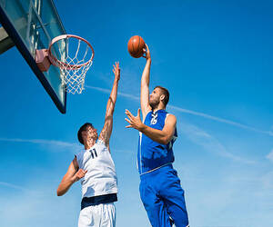
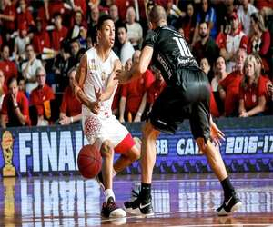

Basquete - Regras e Fundamentos
Fundamentos do Basquete
Drible

No basquete, o drible é o ato de quicar a bola com uma mão enquanto o jogador avança pela quadra. É uma habilidade fundamental para se deslocar com a posse de bola, proteger a bola de um defensor e desvencilhar-se de um marcador. Existem diferentes tipos de drible, como o drible baixo (para proteger a bola) e o drible alto (para avançar com velocidade), e variações como o drible entre as pernas ou o drible por trás das costas.
Arremesso
O arremesso é a ação de lançar a bola em direção à cesta. Existem várias técnicas, como o jump, bandeja e gancho.
Passe
O passe é a ação de transferir a bola para um companheiro de equipe. Os principais tipos são: peito, picado e por cima da cabeça.
Regras Básicas
- Uma partida tem 4 quartos de 10 minutos cada
- Cada equipe tem 5 jogadores em quadra
- Uma cesta pode valer 2 ou 3 pontos, dependendo da distância
- Lance livre vale 1 ponto
- Não é permitido andar com a bola sem driblar